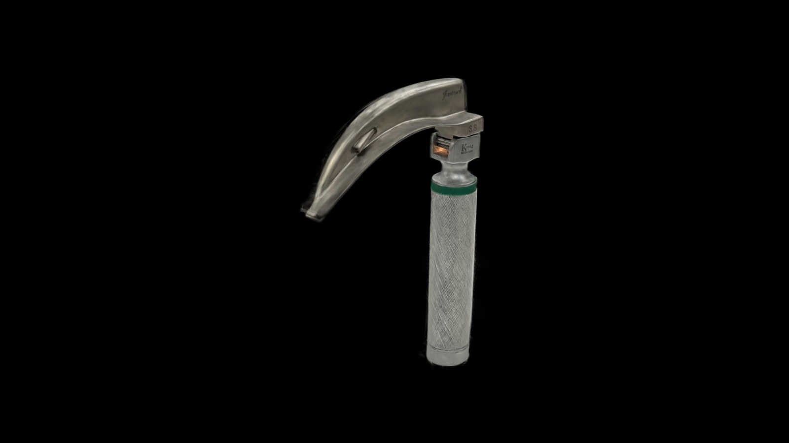
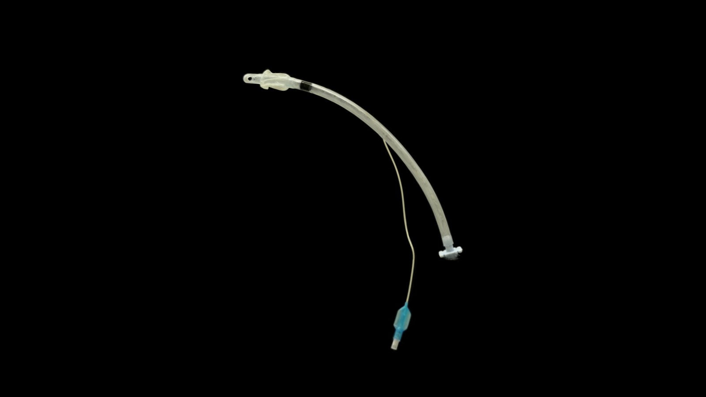
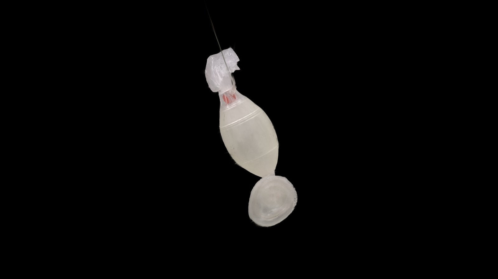

3DGS Health Scenes
Health-care environments as 3D Gaussian Splats — explore them in the browser.
Scenes

Ambulance — iPhone
5.5M splats · 61 MBA detailed iPhone scene with Insta360-guided ceiling and corner repairs, retaining captured materials, equipment and bedding.
Open →
Ambulance — Insta360
1.0M splats · 16 MBThe same ambulance from a single Insta360 capture — smaller scene with view-dependent color, opening at the supply cabinet and attendant seat.
Open →
Props Lab
10 props · 33 MBStage medical equipment in the cleaned ambulance — drop props onto modeled support surfaces, then export the layout.
Open →
SfM Review
8,075 frames · 997K pts · 50 MBThe COLMAP solve behind the scene — scrub per-clip camera trajectories, frame-to-frame pose diagnostics, and floor/ceiling coverage grids.
Open →Training Manikin

Interactive Manikin
11 movable joints · 2.7M splatsExplore the fused scan, compare front and back captures, and see body segmentation. Try bed poses or rotate individual joints.
Interact →
Ambulance + Manikin
Collision checks · GravityPose the manikin on the ambulance stretcher. Hold and release its arms, test gravity, and explore the cabin with collision checks.
Interact →Medical Equipment

Laryngoscope
577K splats · 6.8 MBA curved-blade laryngoscope scanned as a single object — chrome blade and knurled handle.
Open →
Endotracheal Tube
70K splats · 0.9 MBA cuffed endotracheal tube with its connector and pilot balloon line.
Open →
Bag Valve Mask
80K splats · 3.3 MBA self-inflating bag valve mask with the face mask and reservoir bag attached.
Open →
Zoll Defibrillator
768K splats · 9.9 MBA Zoll defibrillator in its grey-and-yellow soft carry case, handle up.
Open →